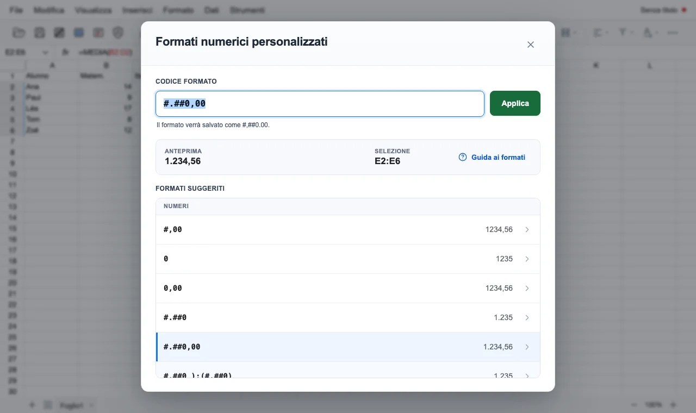

Formati numerici
Un formato cambia come si mostra un numero, non il suo valore: i calcoli conservano tutti i decimali.
Scegliere un formato
Formato › Numero, o l’elenco Automatico della barra dei pulsanti.
| Formato | Esempio |
|---|---|
| Automatico | 1200,09 |
| Testo semplice | 1200,09, allineato a sinistra; l’immissione resta un testo |
| Numero | 1200,09 |
| Percentuale | 120009,00%; 0,25 diventa 25,00% |
| Scientifico | 1,20E+03 |
| Contabilità | (1.200,09) € |
| Valuta | 1.200,09 € |
| Data, Ora, Data e ora | per le date: 29/11/2017, 3:00 PM, 15:00… |
Il simbolo di valuta è quello della lingua dell’interfaccia.
| Pulsante | Effetto |
|---|---|
| percentuale | |
| un decimale in meno | |
| un decimale in più |
Questi pulsanti valgono anche per i numeri di un elenco. Per arrotondare il valore stesso, usare ARROTONDA.
Formato personalizzato
Formato › Numero › Formato numerico personalizzato…: scegliere un formato suggerito, o scrivere un codice. L’anteprima mostra il risultato; Guida ai formati ricorda i segni; Applica lo dà alla selezione.

| Segno | Funzione | Codice | 1234,5 si mostra |
|---|---|---|---|
0 | una cifra, zero compreso | 0,00 | 1234,50 |
# | una cifra se è utile | #,## | 1234,5 |
. | raggruppa le migliaia | #.##0 | 1.235 |
% | percentuale | 0% | 123450% |
"testo" | un testo, un’unità | 0,0 "m" | 1234,5 m |
E+00 | notazione scientifica | 0,00E+00 | 1,23E+03 |
; | formati di positivi, negativi, zeri, testi | 0;-0;"nullo" | 1235 |
[Red] | colore | 0;[Red]-0 | negativi in rosso |
Il codice si scrive con i separatori della lingua; la finestra indica la forma in cui è salvato (#,##0.00), la stessa di Excel.
Date e ore
| Codice | 29 agosto 2026, ore 14:30 |
|---|---|
dd/MM/yyyy | 29/08/2026 |
d mmm yyyy | 29 Aug 2026 |
dddd d mmmm yyyy | Saturday 29 August 2026 |
hh:mm | 14:30 |
dd/MM/yyyy hh:mm | 29/08/2026 14:30 |
I nomi dei mesi e dei giorni si mostrano in inglese.
Unità
Sotto Unità, formati come 0,00 "V", 0,00 "Ω", 0,00 "mm": la cella resta un numero, con cui si calcola.